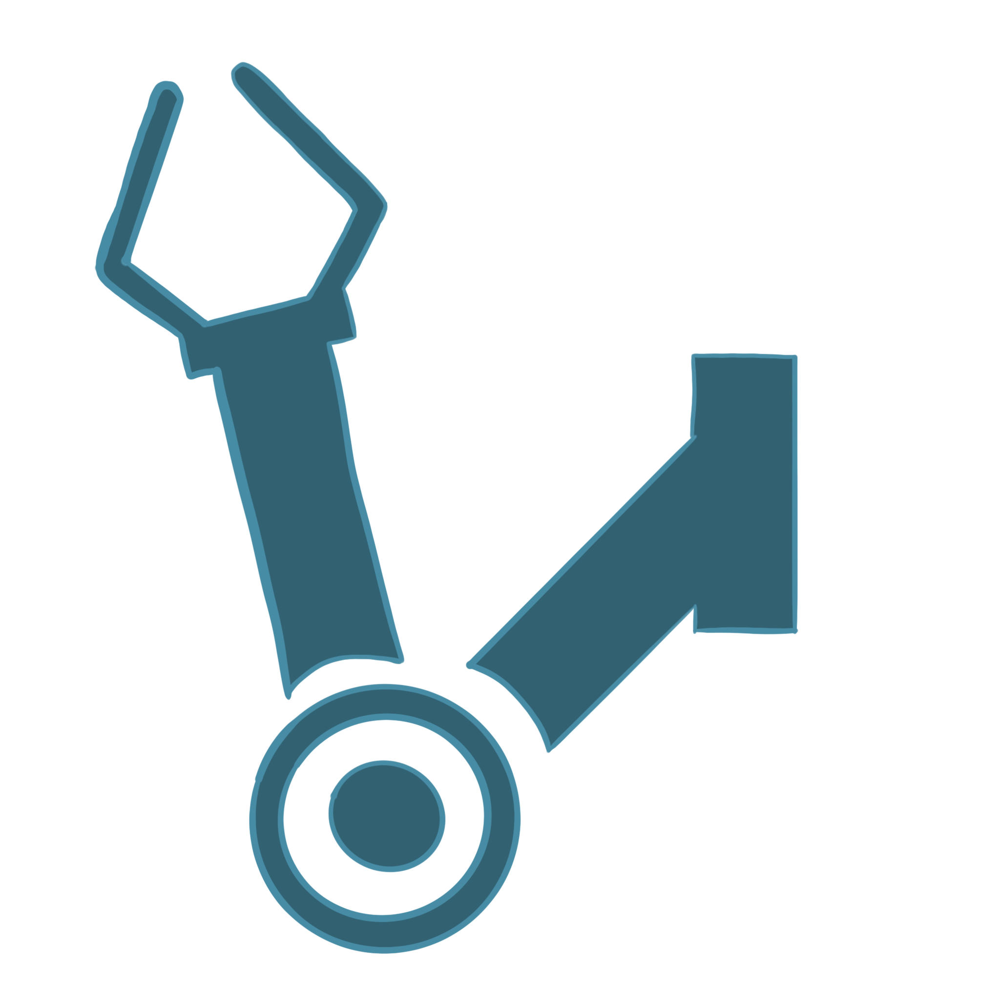
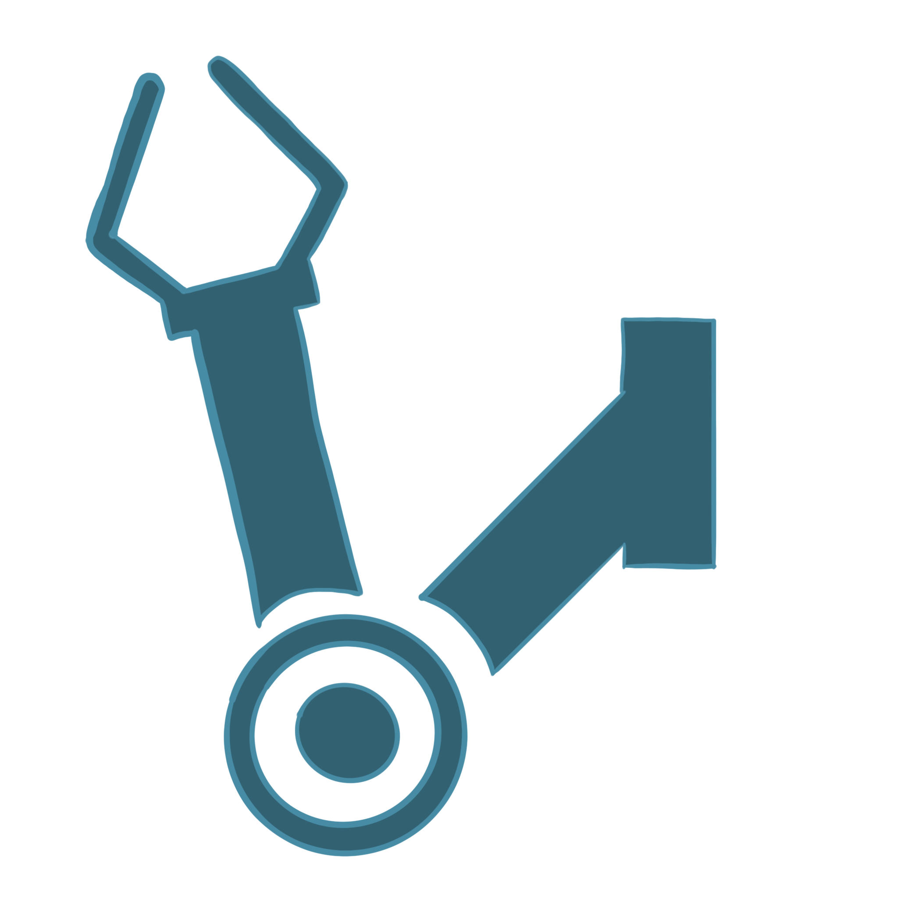

Sand-E is one of the projects initiated by SUTD Organization of Autonomous Robots. It aims to create a machine that can clean the beach. The Sand-E robot is powered by lithium-polymer (LiPo) batteries and is a fully remote-controlled prototype.
Sand-E is one of the projects initiated by SUTD Organization of Autonomous Robots. It aims to create a machine that can clean the beach. The Sand-E robot is powered by lithium-polymer (LiPo) batteries and is a fully remote-controlled prototype.
Motivation
Focus on Sustainability
Reducing Physical Strength
 

The initiation of this project was to complement SUTD’s inherent culture and emphasis on sustainability, green initiatives, and innovation. SAND-E is made mostly of recycled or 3D printed parts, excluding the electronics.
This project was taken up mainly to reduce the physical strain experienced by our cleaners every day by automating the process. Since SAND-E is still in its prototyping stage, it is not able to fully take over the roles and responsibilities of the cleaner but in due time, it will be able to clean the beach autonomously without the need for arduous labour.